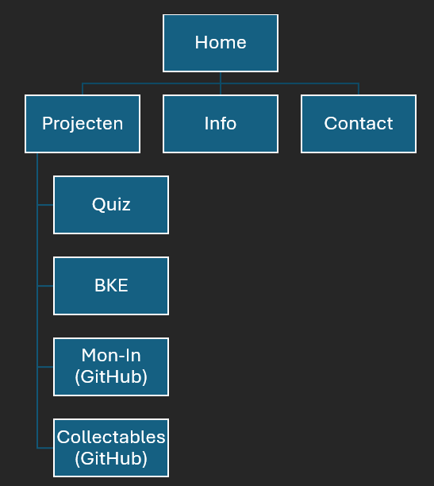

Op deze info pagina vind je wat informatie over hoe ik mijn portfolio heb gemaakt. Dingen zoals inspiratie en de technieken die ik gebruikt heb zul je hier vinden.
Mijn portfolio is voornamelijk opgebouwd met Bootstrap 5.3. Persoonlijk vind ik dit erg fijn om te gebruiken, want dit ziet er professioneel uit en is snel en eenvoudig te gebruiken. Bootstrap is makkelijk om te gebruiken voor dingen zoals responsive design en grid. Daarnaast gebruik ik Bootstrap Icons voor de icoontjes en AOS (Animate On Scroll) voor subtiele animaties wanneer je scrolt. Ik ben erg fan van Bootstrap Icons, ik vind dat dit erg bijdraagt aan de details van mijn website. Ook AOS vind ik erg fijn, dit zorgt ervoor dat mijn website minder statisch is.
Voor de uitstraling van de site heb ik mij vooral laten inspireren door portfoliowebsites die hier te vinden zijn. Dit is de profielwebsite van mijn docent, die een aantal portfolio websites van haar studenten heeft staan. Hier werd ik vooral geïnspireerd door deze website. Ik vind het kleurgebruik en de design van sommige elementen erg mooi, en heb deze goed kunnen gebruiken als inspiratie voor mijn eigen portfolio. Hieronder zie je een aantal afbeelding van websites die ik als inspiratie heb gebruikt voor mijn portfolio.
Ik heb voor mijn kleurenschema vooral donkere kleuren gebruikt. Ook heb ik gebruik gemaakt van Bootstrap gradients om de pagina wat netter te maken en wat minder eentonig. Dit is bijvoorbeeld terug te zien in mijn navigatiebalk.
Blauw